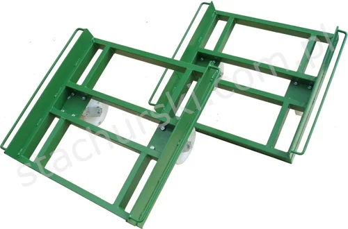

OTHER EQUIPMENT / 02 MODELS OFFICIAL CATALOGUE FAMILY
Other equipment
for glass & windows
Other specialised steel products and made-to-order metal constructions.
2 MODELS / OPTIONS·STACHURSKI / 1974
— IN THIS RANGE
Models and options in the official range
Product references follow Stachurski’s published catalogue. Confirm current availability and configuration with the team.
S↗
OTHER EQUIPMENT · PRODUCT FAMILY
Have a model in mind?
Send the model code and your handling requirements to request a tailored quotation.